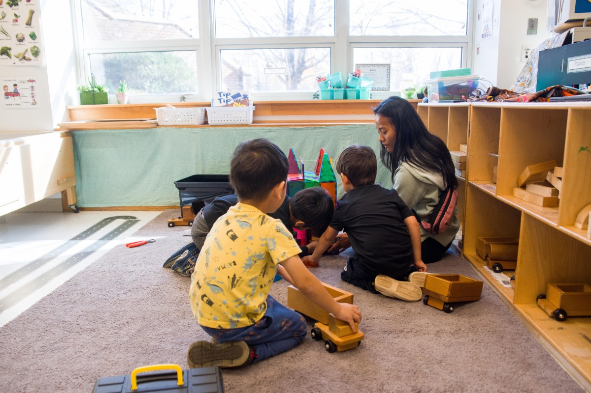
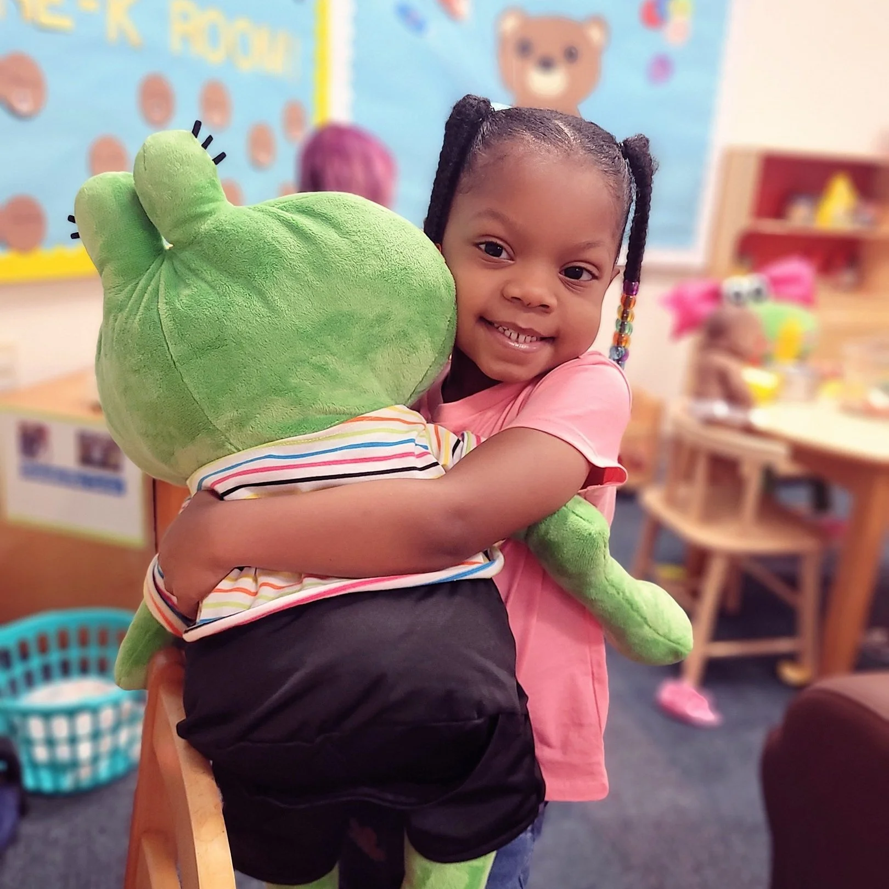
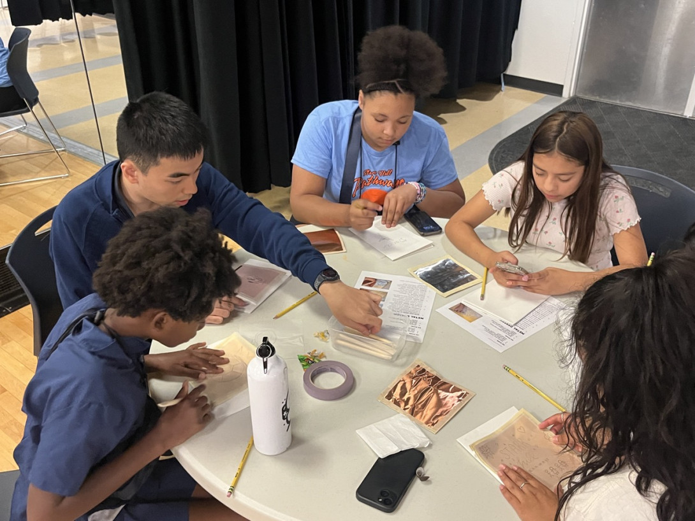
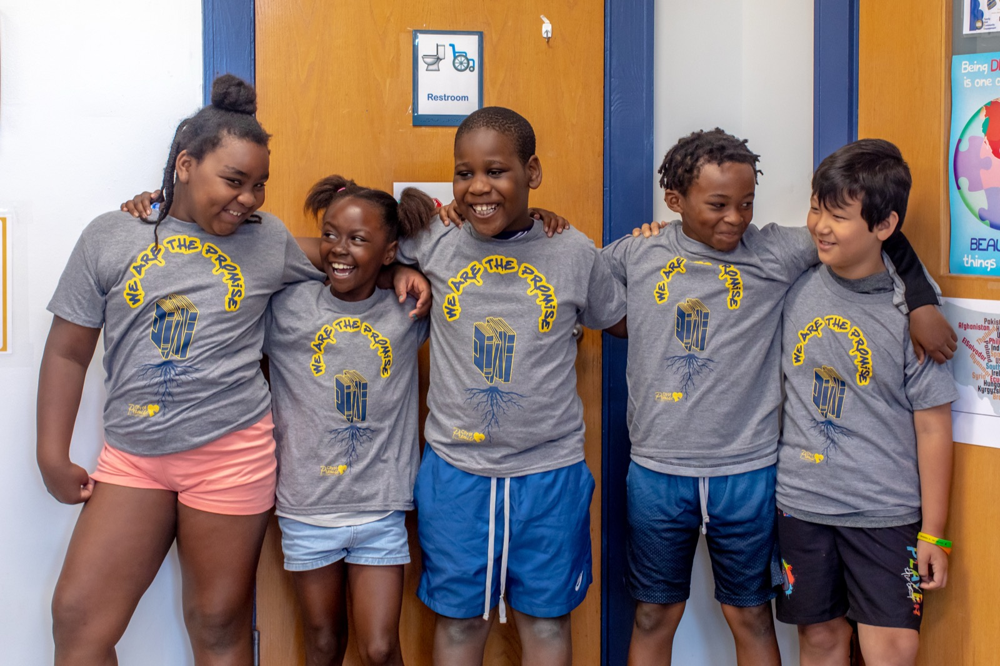

In PFS: Data infrastructure, fiscal backbone, and childcare connections.
United Way of Greater Charlottesville convenes and funds community-wide initiatives across health, education, and financial stability. They serve as the connector between donors, volunteers, and the local nonprofits doing direct service work. Within PFS, they hold the operational backbone: running the shared SmartSheets data infrastructure, serving as fiscal agent, and connecting families to childcare resources.
Visit unitedwaycville.org →
In PFS: Behavioral health and family well-being services.
ReadyKids provides early childhood education, parent support, and trauma-informed mental health services to Charlottesville children from birth through twelve. Their model centers caregivers as much as children, because family stability is what makes the work with kids stick. In PFS, they lead behavioral health and family well-being services for students and caregivers alike, with early childhood connections for younger siblings.
Visit readykidscville.org →
In PFS: Evaluation and continuous improvement.
The Virginia Center for Community Partnerships connects the University of Virginia's research and service capacity with community-led work in Charlottesville. Their flagship youth program, Starr Hill Pathways, delivers long-term STEAM mentorship and college access for middle and high school students in Charlottesville City and Albemarle County. The program is fully free, with transportation and meals provided. In PFS, VCCP leads evaluation and continuous improvement, so the pilot is measured honestly and adapted based on what the data shows.
Visit communitypartnerships.virginia.edu →
In PFS: Program coordination, staffing, tutoring architecture, and family engagement.
City of Promise provides cradle-to-career support to families in Charlottesville's 10th and Page neighborhood, a historically Black community where the organization is rooted. Their work spans early childhood through college access, anchored in trusted relationships built over years. In PFS, they anchor program coordination, staffing, and family engagement, running the day-to-day work of the pilot at Trailblazer.
Visit cityofpromise.org →In PFS: Parent workforce and economic mobility pathways.
Network2Work, operated through Piedmont Virginia Community College, connects job-seekers facing barriers to employment with employers, credentialing programs, and the wraparound supports needed for stable employment. Nearly 70% of participants find jobs, with an average wage gain of over $17,000. In PFS, they lead parent workforce and economic mobility pathways, because when parents thrive, children thrive.
Visit pvcc.edu/community-business/network2work →Five organizations, one shared effort — and your gift goes further for it. Donations run through United Way, the coalition's fiscal backbone, and directly fund the Trailblazer pilot.